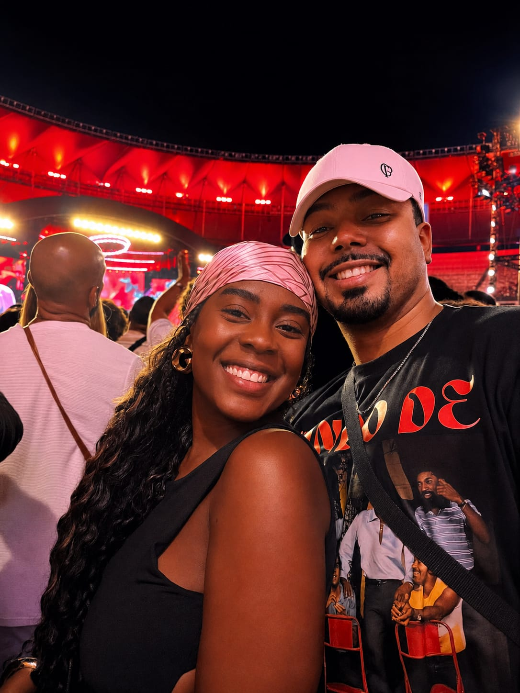

Antes de continuar...

Uma coisa que eu ainda preciso te dizer...
Parece loucura, sabia? Hoje eu não consigo mais viver sem você. Mas, no começo, eu nunca imaginaria isso. Aquela carinha brava enquanto falava com aquele cidadão lá no Poupatempo... eu não sabia que ali estava o amor da minha vida. A gente passou por muita coisa. E também por muitas coisas felizes. Todos aqueles momentos em que a gente ria e embarcava na loucura um do outro. Como naquela vez em que o carro acabou a gasolina, eu fui empurrar e você nem sabia onde era o freio. 😂 Ou na nossa primeira ida à praia depois da cachoeira estar fechada. Lembro que naquele dia eu só pedi para você entrar no carro... e você entrou com total fé em mim. KKK. Eu nunca nem tinha ido tão longe com o carro. A gente podia ter morrido, sabia? 😂 Lembro de todas as vezes em que a gente chegava em casa todo berengue e, mesmo assim, se amava. Sempre fomos um casal sensacional. Mas aí vieram as brigas sem necessidade. Talvez tenha faltado maturidade. E isso acabou falando mais alto do que a verdade. A verdade é que não existe melhor para nós do que um ao outro. Depois vieram as brigas, as desconfianças maiores... e, no meio de tudo isso, nós nos perdemos. Eu peço desculpas por tudo. Por tudo que aconteceu. Eu sempre cobrei de você comunicação, mas fui eu quem muitas vezes não conseguiu te falar o que estava sentindo. E, mesmo em meio a todo esse caos, o nosso amor sempre foi um laço que eu sinto que nunca se quebrou. Eu te amo mais do que já amei qualquer coisa. Quero que você seja a mãe dos meus filhos, a dona da nossa casa e a mulher da minha vida. Quero o nosso "nós" de volta. Quero um cachorro e um pirralho junto com você. Quero curar todas as suas dores e ser o seu porto seguro. Eu me sinto frágil sem você comigo. E, em meio a todo o ódio do mundo, eu só quero ter o seu amor para me proteger. A única mudança de status que eu quero é para ser seu marido e pai dos seus filhos. Quero que você volte para mim. Vamos recomeçar. Juntos. Eu te amo. ❤️
Quanto eu te amo?
Eu quero o nosso “nós” de volta.
Vamos recomeçar?
Juntos.